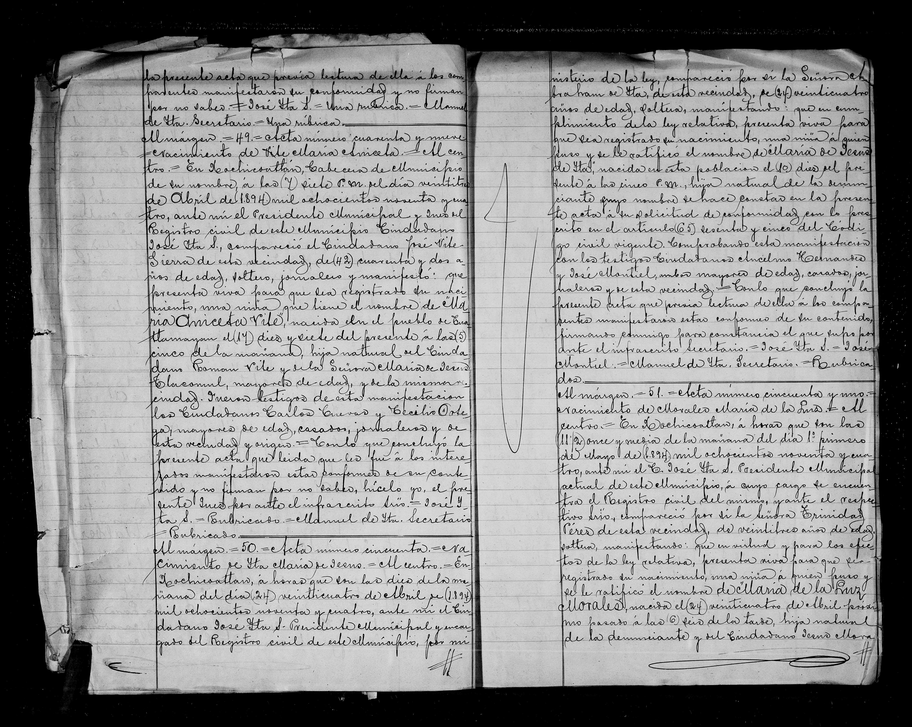

María Jesús de Ita

| Tipo | Acta de nacimiento |
| Fecha | 10 de abril de 1894 |
| Lugar | Xochicoatlán |
| Nacida | María Jesús de Ita |
| Padres | hija de Abraham de Ita (madre: ilegible/duda) |
Transcripción pendiente de verificación: los datos provienen del índice del registro; el manuscrito no ha sido releído línea por línea. Todo texto manuscrito no verificado se marca «ilegible/duda».